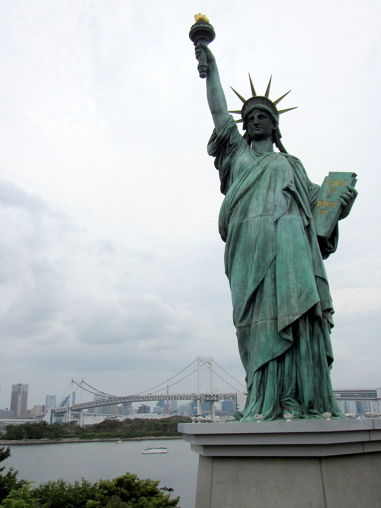

<a href="https://commons.wikimedia.org/wiki/File:%E3%81%8A%E5%8F%B0%E5%A0%B4%E6%B5%B7%E6%B5%9C%E5%85%AC%E5%9C%92%E3%81%AE%E8%87%AA%E7%94%B1%E3%81%AE%E5%A5%B3%E7%A5%9E%E5%83%8F_Statue_of_Liberty_in_Odaiba_Seaside_Park_-_panoramio.jpg">自由の女神</a> © 2013 by <a href="https://web.archive.org/web/20161102144304/http://www.panoramio.com/user/828011?with_photo_id=90520978">Bohao Zhao</a> is licensed under <a href="https://creativecommons.org/licenses/by/4.0/">CC BY 4.0</a>
